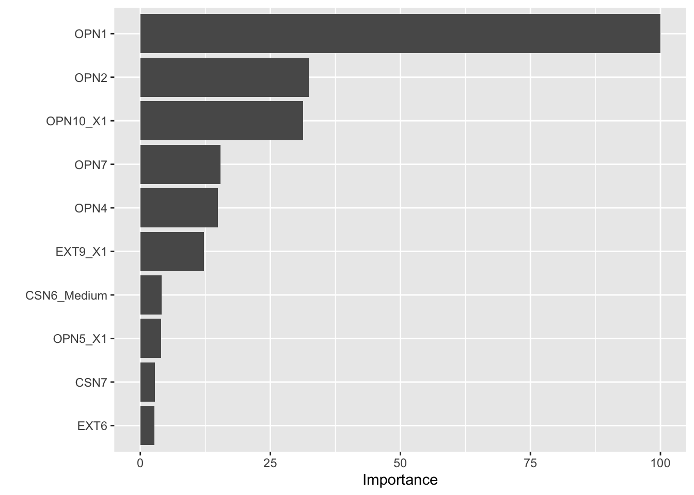

library(caret)
library(rpart)
library(recipes)
library(rsample)
library(ranger)
library(vip)
set.seed(123)
target <- "OPN8"
split <- initial_split(data, prop = 0.7, strata = target)
data_train <- training(split)
data_test <- testing(split)
formula_string <- as.formula(paste(target, "~ ."))
blueprint <- recipe(formula_string, data = data_train) %>%
step_impute_bag(all_predictors()) %>%
step_dummy(all_factor_predictors(), one_hot = FALSE)
tgrid <- expand.grid(
mtry = sqrt(ncol(data_train)-1),
splitrule = "gini",
min.node.size = c(1,5)
)
rf_model_1 <- train(
blueprint,
data = data_train,
importance = "impurity",
metric = "Kappa",
method = "ranger",
trControl = trainControl(method="cv", number = 10),
tuneGrid = tgrid,
num.trees = 500
)Random Forests
Overview of Random Forests
Random Forests are among the most successful and widely used machine learning models ever developed.
Some consider random forest to be the default baseline approach for tabular data prediction problems because they:
- require minimal tuning,
- handle nonlinearities and interactions automatically,
- work well with both categorical and continuous features, and
- are robust to noise and overfitting
Motivation
In the last two section we have covered decision trees and bagging. Summarizing those topics we’ve seen that:
- Decision trees are flexible but can easily overfit the training data. Why is this?
- Bagging (Bootstrap Aggregation) helps reduce variance by using many trees trained on different bootstrap samples. Why does this help?
However, in bagging, all trees use the same set of predictors at each split. This can be a problem when predictors are correlated.
When predictors are highly correlated, the trees trained on different bootstrap samples tend to:
- Develop similar structures, and therefore
- Produce similar predictions.
Imagine that split choices early in the tree (e.g., always splitting on the same or a correlated variable), lead to similar subsequent splits.
This makes the individual trees highly correlated with one another.
But why is this a problem?
The effectiveness of bagging depends on both:
- The variance of each model, and
- The correlation among models.
Averaging \(B\) models reduces variance approximately by:
\[ \text{Var}(\bar{f}) \approx \rho \sigma^2 + \frac{(1 - \rho)\sigma^2}{B} \]
where:
- \(\sigma^2\) = variance of each model,
- \(\rho\) = correlation between model predictions,
- \(B\) = number of models.
If \(\rho\) (the correlation) is large, the first term dominates, and averaging provides little variance reduction
Imagine having 100 decision trees, all nearly identical. Averaging 100 identical trees gives you the same model. The benefit of bagging comes only when each tree sees the data differently and makes different mistakes.
How Can We Fix This?
One method to reduce correlation among trees is to inject randomness into the tree-building process.
Random Forests deliberately introduce randomness into the model-building process by: randomly selecting a subset of predictors at each split.
This de-correlates the trees:
- Different trees “see” different subsets of features,
- They grow differently,
- Their errors are less correlated,
- And averaging them meaningfully reduces variance.
Thus, random forests address of high correlation among trees that limits the effectiveness of bagging.
What are Random Forests?
So, what are random forests exactly?
A random forest is an ensemble of decision trees, trained on:
- different bootstrap samples of the data (like bagging), and
- random subsets of predictors considered at each split.
Just as with bagging, each tree makes a prediction, and the forest’s final prediction is:
- The majority vote (for classification), or
- The average prediction (for regression).
Random Subset of Predictors
Instead of searching all predictors for the best split as we did with decision trees and bagging approaches, random forests modify this step by selecting a random subset of predictors at each split. The next split is then determined only from this subset.
This reduces correlation among trees, increasing the effectiveness of averaging.
Typical defaults where \(p\) is the total number of predictors in model: - Classification: \(m = \sqrt{p}\) - Regression: \(m = p/3\)
Random Forest Algorithm
Given training data with \(n\) observations and \(p\) predictors.
Choose the number of trees \(B\) to grow.
For some number of trees \(b = 1, 2, \ldots, B\):
- Draw a bootstrap sample from the training data.
- Grow a decision tree to the bootstrap sample:
- At each node, randomly select \(m\) predictors.
- Choose the best split among them.
- Grow the tree fully (no pruning).
Aggregate predictions across all trees:
- Classification: majority vote.
- Regression: average.
Out-of-Bag (OOB) Error
Just as with bagging, each tree is trained on a bootstrap sample (about 63% of the data).
The remaining 37%—called out-of-bag (OOB) observations—act as a built-in validation set.
- For each observation, predict its outcome using only trees that did not include it in their bootstrap sample.
- The OOB error provides an unbiased estimate of test error without needing a separate validation set.
Variable Importance
In the random forests framework we can also estimate variable importance, for example using the mean decrease in impurity (MDI) or how much a variable reduces Gini impurity or variance across the various splits it was included in.
Limitations
Just as in the case of standard bagging, random Forests are less interpretable than a single tree.
Other limitations include:
- They can be computationally expensive for large datasets.
- Extrapolation beyond the range of training data is poor (like most tree-based methods).
Random Forests in R
There are a number of ways to implement random forests in R. The book uses the ranger and h2o packages and discusses a number of important parameters one might be interested in tuning.
We will continue with our use of caret and tidymodels for consistency. In doing so we will discuss the hyperprameters that can be tuned in this framework.
Hyperparameters
mTry
The mTry hyperparameter controls the number of predictors randomly selected at each split. The typical default for classification tasks is \(\sqrt{p}\), and \(m = p/3\) for regression tasks. Here \(p\) is the total number of predictors.
To recap:
- A random subset of size mtry is chosen from the full set of predictors.
- The best split is found only within those mtry predictors.
The success of Random Forests depends on two competing goals:
- Each tree should be strong: capable of making accurate predictions.
- Trees should be diverse: make different errors so that averaging them reduces variance.
The mtry parameter controls the trade-off between these two.
As mtry decreases we have more randomness, theoretically more diverse trees and lower correlation among the trees.
splitrule
splitrule is used to control how a node is split inside each tree. Different rules optimize different criteria and can change accuracy, speed, and calibration.
For classification task the default is "gini" as we have discussed in previous sections.
For regression tasks the default is "variance", meaning choose the split that maximizes reduction in response variance.
min.node.size
min.node.size sets the minimum number of observations required in a terminal node (leaf) of each decision tree in the forest.
In other words, it determines how deep the trees are allowed to grow:
- Smaller values indicate deeper trees with more splits
- Larger values indicate shallower trees with fewer splits
By default, min.node.size is set to \(5\) for regression tasks and \(1\) for classification tasks but you can search over many values to find the best one for your problem.
Fitting the Model
Now that we have a decent understanding of random forests and their hyperparameters, let’s fit a random forest model to our data using the caret package. We can fit the model and evaluate its performance on the test set.
Now, that we have fit the model let’s look at the variable importance plot and evaluate the model on the test set.
vip::vip(cv_model_1)
vip::vip(rf_model_1)
Now, that we have fit the model let’s look at the variable importance plot and evaluate the model on the test set.
# Make predictions on the test set
pred_class <- predict(rf_model_1, data_test)
# create confusion matrix
confusionMatrix(
data = relevel(pred_class, ref = "1"),
reference = relevel(data_test[,"OPN8"], ref = "1")
)Confusion Matrix and Statistics
Reference
Prediction 1 0
1 98 29
0 35 139
Accuracy : 0.7874
95% CI : (0.7368, 0.8322)
No Information Rate : 0.5581
P-Value [Acc > NIR] : <2e-16
Kappa : 0.5669
Mcnemar's Test P-Value : 0.532
Sensitivity : 0.7368
Specificity : 0.8274
Pos Pred Value : 0.7717
Neg Pred Value : 0.7989
Prevalence : 0.4419
Detection Rate : 0.3256
Detection Prevalence : 0.4219
Balanced Accuracy : 0.7821
'Positive' Class : 1
Looks slightly better than our previous models. Let’s look at the ROC curve.
Original Decision Tree
Accuracy Kappa AccuracyLower AccuracyUpper
0.7408638 0.4687995 0.6874804 0.7894362 Bagged Decision Trees
Accuracy Kappa AccuracyLower AccuracyUpper
0.7740864 0.5426963 0.7226024 0.8200852 Random Forest
Accuracy Kappa AccuracyLower AccuracyUpper
0.7873754 0.5668870 0.7367651 0.8322292